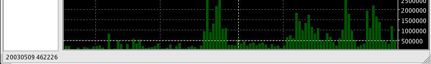

Status Bar

Description
The status bar, at the bottom of the screen, is used to display status messages during various operations and interactions with the user. The status bar will also display the results of the cross-hairs when you click on either window. The format of the chart pointer is 2 values. First is the x value or date and the second is the y value or the plotted value.